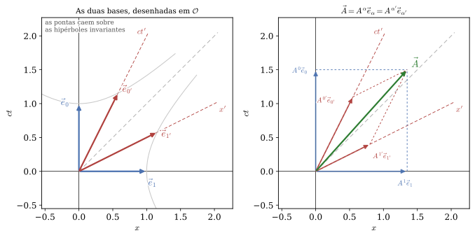

Relatividade Geral · UDESC/CCT · Capítulo 2
Vetores e
momento
A linguagem de quadrivetores, e como ela resolve cinemática e dinâmica relativística sem depender de componentes particulares.
Aulas 5 a 10 · use → e ← para navegar, F para tela cheia
Roteiro
O caminho deste capítulo
| Aula | Assunto |
|---|---|
| 5 | Vetores no espaço-tempo · produto escalar |
| 6 | Quadrivelocidade · vetores da base · quadrimomento |
| 7 | Conservação · energia como componente temporal |
| 8 | Centro de momento · massivas e sem massa |
| 9 | Exemplos resolvidos · problemas orientados |
| 10 | Oficina computacional · exercícios |
A pergunta que organiza tudo
Como escrever leis de conservação que valham, com a mesma forma, em todos os referenciais?
A resposta exige primeiro decidir o que é um vetor aqui — e a resposta não é “uma lista de quatro números”.
Aula 5 · Seção 2.1
O critério é a transformação
As coordenadas de um evento mudam de S para S' pela transformação de Lorentz, que em forma compacta é
Um quadrivetor é qualquer conjunto de quatro números que se transforme exatamente assim. Essa é a definição inteira.
Consequência prática imediata: quatro números juntos num parêntese não formam um vetor até que se verifique como eles mudam de referencial.
O exemplo que interessa é \mathrm{d}x^\mu, o deslocamento entre dois eventos vizinhos: por ser diferença de coordenadas, transforma-se assim. Dividi-lo por um escalar devolve outro vetor — a matriz \Lambda passa direto pela divisão.
Aula 5 · Seção 2.1
Por que a velocidade comum não é um vetor
Dividir por \mathrm{d}t não produz um vetor: \mathrm{d}t é a componente temporal de \mathrm{d}x^\mu, e muda de referencial para referencial.
Logo \bm v=\mathrm{d}\bm x/\mathrm{d}t não é parte de quadrivetor nenhum.
E isso explica algo do capítulo anterior: é por não ser vetorial que a velocidade obedece àquela lei de composição desajeitada,
em vez de se transformar linearmente. O que salva a construção é existir um escalar natural ao longo da linha de mundo: o tempo próprio.
Aula 5 · Seção 2.2
Produto escalar
Ele já existia, disfarçado: o intervalo é o produto de \mathrm{d}x^\mu consigo mesmo. Generalizando,
É invariante
E a prova não precisa ser refeita: aplicada a \bm A=\bm B=\mathrm{d}\bm x, a definição devolve \mathrm{d}s^2. O caso geral segue de \bm A\cdot\bm B=\tfrac12[(\bm A+\bm B)^2-\bm A^2-\bm B^2] — três normas, e normas são intervalos.
Por que é a ferramenta central
Um produto escalar é um número que não depende de quem calcula. Sempre que uma pergunta física for respondida por um produto escalar, a resposta pode ser obtida no referencial mais conveniente e usada em qualquer outro.
Aula 6 · Seção 2.3
Quadrivelocidade
O tempo próprio é o escalar de que precisávamos — o mesmo para todos os observadores. Dividir o deslocamento por ele produz um vetor legítimo:
usando \mathrm{d}\tau=\mathrm{d}t/\gamma. O único acréscimo que torna \bm v vetorial é o fator \gamma — exatamente o preço de trocar \mathrm{d}t por \mathrm{d}\tau.
A norma é fixa
Não é uma velocidade comum em quatro dimensões: seu “tamanho” é sempre -1. É o vetor tangente normalizado à linha de mundo, parametrizada pelo tempo próprio.
Aula 6 · Interlúdio, fora da numeração · Schutz §2.2
Os vetores da base
U^\mu=\gamma(1,\bm v) está certo: o índice à mostra avisa que aquilo já são componentes. Mas \vec U=(\gamma,\gamma\bm v) seria falso — à esquerda, um objeto que não depende de referencial nenhum; à direita, quatro números que só existem depois de escolhidos os eixos.
Lê-se “\vec A tem componentes (A^0,A^1,A^2,A^3) no referencial \mathcal{O}”. A letra embaixo da seta diz quem está medindo.
A marca do outro referencial vai no índice — linha aqui, barra no Schutz —, nunca no símbolo: \vec A\,' sugeriria um segundo vetor, e é exatamente isso que não acontece.
Quatro vetores privilegiados, um por eixo
Um quadrivetor deixa de ser “uma lista de quatro números” e passa a ser uma soma: A^\alpha é quanto se toma de \vec e_\alpha. Componente e vetor da base são as duas metades de uma mesma frase — e a segunda estava implícita desde a Seção 2.1.
Aula 6 · Interlúdio · Schutz §2.2
A base anda para o lado contrário
O mesmo vetor, somado em duas bases: A^\alpha\vec e_\alpha=A^{\alpha'}\vec e_{\alpha'}. Troque A^{\alpha'} por \Lambda^{\alpha'}{}_\beta A^\beta, junte os fatores de outro modo e exija que valha para todo \vec A:
Componentes
sem linha → com linha
Base
com linha → sem linha
A mesma matriz, em sentidos opostos — e é esse cancelamento que mantém A^\alpha\vec e_\alpha igual a si mesma. Daí os dois nomes: componentes contravariantes, base covariante.
De brinde: em componentes de \mathcal{O}, \vec e_{0'}\to\gamma(1,v,0,0) e \vec e_{1'}\to\gamma(v,1,0,0) — as inclinações dos eixos t' e x'. E \vec U=\vec e_{0'}: a quadrivelocidade é o vetor temporal da base do referencial que viaja com a partícula.
Aula 6 · Interlúdio · Schutz §2.2
As duas bases, no papel de \mathcal{O}

Aula 6 · Interlúdio · Schutz §2.2
A métrica é a tabela da base
O produto escalar de dois vetores quaisquer está inteiramente determinado por dezesseis números: os produtos escalares da base entre si. E esses já são conhecidos — as componentes da base são \delta_\alpha{}^\beta.
Uma tétrade ortonormal — entendido que “unitário”, para um vetor temporal, quer dizer norma -1. Em espaço curvo a definição é a mesma, g_{\mu\nu}=\vec e_\mu\cdot\vec e_\nu; o que se perde é o direito de dizer que a tabela vale \mathrm{diag}(-1,1,1,1) em todo ponto.
A tabela de sinais vinha de onde?
Da base. \eta_{\mu\nu} não foi imposta de fora: é o que sobra quando se pergunta como os quatro eixos de um observador se relacionam entre si.
Baixar índice ganha desenho
a componente de índice baixo é a projeção do vetor sobre o eixo correspondente.
E a ponte para 2.4: com \vec U=\vec e_{0'}, -\vec p\cdot\vec U=p^{0'}. Trocar “a componente 0 no referencial de fulano” por “o produto escalar com a quadrivelocidade de fulano” é a manobra que o curso repete até o fim.
Aula 6 · Seção 2.4
Quadrimomento e casca de massa
A norma dá a relação de dispersão:
Para fótons, m=0 e E=|\bm p| — a energia é o próprio módulo do momento.

Aula 7 · Seção 2.5
Conservação, numa linha
Essa equação compacta contém conservação de energia e de momento ao mesmo tempo. E a vantagem da forma tensorial é decisiva: se ela vale em um referencial inercial, vale em todos.
Decaimento M\to 2m
No repouso da partícula inicial, por simetria os momentos finais têm módulos iguais e sentidos opostos, e cada produto tem E=M/2:
O decaimento só é possível se M\ge 2m — do contrário o radicando fica negativo.
A cinemática, sozinha, já proíbe processos: nenhuma dinâmica precisou ser invocada.
Aula 7 · Seção 2.6
Energia é uma componente, não um objeto
Assim como tempo e espaço são partes de um mesmo objeto geométrico, energia e momento também são. Uma colisão que parece envolver só energia num referencial envolve os dois, inseparáveis, em outro.
Mais fundamental que E=\gamma m, porque não depende do referencial: a energia de uma partícula depende do observador, a massa de repouso não.
Para um sistema
Essa massa inclui energia cinética interna. Um gás quente numa caixa tem massa maior que o mesmo gás frio.
Duas partículas sem massa, cada uma com energia E, em sentidos opostos: p_1^\mu=(E,E,0,0) e p_2^\mu=(E,-E,0,0) dão P^\mu=(2E,0,0,0), logo M_{\rm sist}=2E. Cada uma tem massa zero; o sistema, não.
Aula 8 · Seção 2.7
Centro de momento
O referencial do centro de momento é definido por \bm P=0. Nele, toda a energia disponível aparece como massa invariante do sistema — e é por isso que ele simplifica colisões.
A energia disponível para criar partículas novas não é a energia do feixe: é \sqrt{s}=M_{\rm sist}, e a diferença entre as duas montagens experimentais é enorme.

Aula 8 · Seção 2.8
Massivas e sem massa
| com massa | sem massa | |
|---|---|---|
| p^\mu p_\mu | -m^2<0 (temporal) | 0 (nulo) |
| energia | E=\gamma m | E=|\bm p| |
| velocidade | v<1 sempre | v=1 sempre |
| tempo próprio | corre normalmente | \mathrm{d}\tau=0 — não há |
| referencial de repouso | existe | não existe |
A última linha é a que mais custa aceitar: não existe referencial que acompanhe um fóton. Perguntar “o que o fóton vê” é perguntar por um referencial que a teoria não tem — e a quadrivelocidade, cuja norma é sempre -1, sequer pode ser definida para ele.
Aula 9 · Seção 2.10
Compton, sem calcular o elétron
Da conservação p_\gamma+p_e=p_\gamma'+p_e', isole p_e' e tome a norma. Como p_e'\cdot p_e'=-m_e^2 — a casca de massa —, o elétron final desaparece da conta:
A relação de Compton em energias, sem h nem \lambda. Nunca foi preciso calcular o quadrimomento do elétron espalhado — essa é a técnica padrão para espalhamentos e decaimentos.

Aula 9 · Seção 2.10
Doppler transversal: um efeito sem análogo clássico
Uma fonte passa e emite um fóton perpendicularmente à sua velocidade, no instante em que o observador o recebe. A frequência própria é a energia medida por quem viaja com a fonte,
Redshift puro, sem componente de aproximação nem de afastamento. Classicamente não haveria efeito algum: não há movimento ao longo da linha de visada.
O que sobra é só a dilatação do tempo — em v=0{,}8, a frequência recebida é 0{,}6\,\nu_0.
Repare no método: a frequência própria foi obtida como um produto escalar, -p_\mu U^\mu — a energia de um fóton medida por um observador de quadrivelocidade U^\mu. É uma fórmula que vale em qualquer referencial, e que voltará em espaço-tempo curvo.
Aula 10 · Seção 2.11
Oficina computacional
Quadrivetores — verificar numericamente que U^\mu U_\mu=-1 e p^\mu p_\mu=-m^2 se mantêm sob boosts aleatórios, e montar a massa invariante de um sistema de várias partículas.
Compton e foguete — a relação de Compton conferida contra a conservação bruta, e a equação do foguete relativístico integrada numericamente.
Os programas são \texttt{cap02\_quadrivetores.py} e \texttt{cap02\_compton\_foguete.py}, com as verificações simbólicas em \texttt{cap02\_quadrivetores.wl}.

Fechamento
O que fica
Uma definição
Vetor é o que se transforma como x'^\mu=\Lambda^\mu{}_\nu x^\nu. Não é lista de quatro números.
Uma ferramenta
O produto escalar dá números que não dependem de quem calcula — escolha o referencial conveniente e use a resposta em qualquer outro.
Um vínculo
p^\mu p_\mu=-m^2. A casca de massa é o que permite eliminar da conta a partícula que não interessa.
O que vem
Vetores foram suficientes aqui. Para escrever a fonte da gravidade será preciso um objeto com dois índices — e é o Capítulo 3 que o constrói.
Para a próxima aula
Exercícios
Cinco por capítulo, para entrega, com a marca indicando a seção do Schutz que cobre o assunto — e três problemas de Conteúdo extra que pedem para modificar os programas da página da disciplina.
| Assunto | |
|---|---|
| 1 | Verificar que um conjunto de quatro números é (ou não) um quadrivetor |
| 2 | Norma da quadrivelocidade e o significado de U^\mu U_\mu=-1 |
| 3 | Decaimento em duas partículas: energias, momentos e o limiar M\ge2m |
| 4 | Massa invariante de um sistema de fótons |
| 5 | Colisor contra alvo fixo: quanta energia de feixe para o mesmo \sqrt{s} |
Apêndice interativo · Seção 2.2
Ortogonal aqui quer dizer refletido
\theta = 16,0° · \mathbf{A}\cdot\mathbf{B} = 0
\mathbf{A}\cdot\mathbf{A} = -1,55 · \mathbf{B}\cdot\mathbf{B} = +1,55
Os dois ângulos são sempre iguais. Refletir na linha de luz troca \mathbf{A} por \mathbf{B} — e o produto escalar permanece zero, por mais que você abra ou feche o par.
Arraste até o fim: os dois vetores colapsam sobre o espelho. Aí \mathbf{A}=\mathbf{B} é um vetor nulo, e a figura mostra por que ele é ortogonal a si mesmo — está deitado sobre o próprio espelho.
um temporal, um espacial
E este par você já viu: são os eixos ct' e x' do capítulo 1. A “tesoura” que os fechava sobre a linha de luz era, o tempo todo, a afirmação de que os dois eixos de um mesmo observador são ortogonais entre si.
Apêndice interativo · Seção 2.3
Acelerar sempre igual desenha uma hipérbole
a_0 = 1,0 g · 1/a_0 = 0,97 al
\tau = 0,00 a bordo · t = 0,00 na Terra
v = 0,000 c · \gamma = 1,00
Parada no vértice: a linha de mundo sobe reta.
O vértice fica a 1/a_0 da origem — a distância mínima ao vértice do cone de luz, e acelerar mais forte é passar mais perto dele. Mas a linha de mundo nunca cruza a luz: com v=\tanh(a_0\tau), a tangente só se deita na direção dela. E os pontos deixados para trás são passos iguais de tempo próprio — espalham-se porque cada ano de bordo custa cada vez mais tempo na Terra.
Apêndice interativo · Interlúdio
Um vetor, três referenciais
v' = 0,30 c · \gamma' = 1,05
v'' = -0,35 c · \gamma'' = 1,07
| base | A^0 | A^1 | \vec A\cdot\vec A |
|---|---|---|---|
| \{\vec e_\alpha\} | 2,00 | 1,00 | -3,00 |
| \{\vec e_{\alpha'}\} | 1,78 | 0,42 | -3,00 |
| \{\vec e_{\alpha''}\} | 2,51 | 1,82 | -3,00 |
as seis componentes mudam com os controles; a coluna A·A não muda nunca — é o mesmo vetor, lido de três ângulos.
A seta verde nunca se mexe — o que os controles giram são as bases, e com elas os três paralelogramos, que continuam fechando no mesmo ponto. É \vec A=A^\alpha\vec e_\alpha=A^{\alpha'}\vec e_{\alpha'} =A^{\alpha''}\vec e_{\alpha''} com a mão.
Apêndice interativo · Interlúdio
Aumente o vetor da base, e a componente encolhe
| tamanho | componente | produto | |
|---|---|---|---|
| \vec e_x | 0,50 | 6,00 | 3,00 |
| \vec e_y | 0,50 | 4,00 | 2,00 |
eₓ ÷2,00 ⇒ Aˣ ×2,00 · eᵧ ÷2,00 ⇒ Aʸ ×2,00 — sempre ao contrário, e sempre pelo mesmo fator.
A coluna da direita não se mexe — ela é a projeção de \vec A sobre cada eixo, um fato sobre o vetor e não sobre quem o mede, e é ela que obriga componente e base a serem inversas uma da outra. Nem é preciso relatividade para isso: aqui não há \gamma nem cone de luz, só a escolha da régua. Dobrar \vec e_x é medir com uma régua duas vezes maior, e então cabem metade das réguas no mesmo \vec A. É a mesma razão pela qual \vec e_\beta=\Lambda^{\alpha'}{}_\beta\vec e_{\alpha'} anda para o lado contrário de A^{\alpha'}=\Lambda^{\alpha'}{}_\beta A^\beta: lá são \Lambda e \Lambda^{-1}, aqui são \lambda e 1/\lambda.